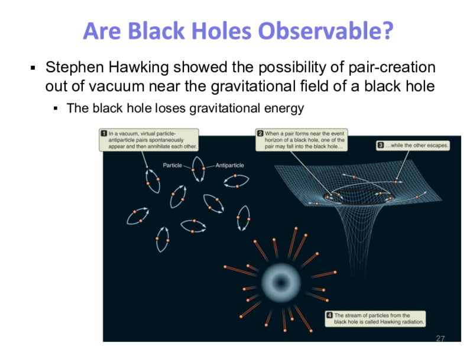
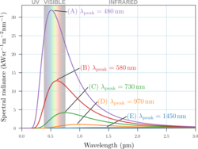

Course Materials¶
Here you can find the test and homework given for this semester.
Lecture Slides¶
Lecture slides are available at this link: https://sites.google.com/odu.edu/oduastronomy
Chapter 18 Relativity and Black Holes



Homework¶
Homework delivered through Sapling Learning. Below is an example of a typical homework assignment in this course.
Ch 18 Homework

Test¶
Test where delivered in person during lecture. Students were handed a print out of test (multiple versions were made) and submitted a scantron and a separate page of their essay answers.
Test 1
Instructions
Read each question carefully.
Each multiple choice question is worth 3 points.
Mark your scantron in SPECIAL CODES with 012345 to denote you have test A.
No cell phones or other electronic devices. Visible cell phone is grounds to confiscate your exam and give you a zero.
Use a # 2 pencil only.
A light-hour is a measure of
time.
distance.
speed.
acceleration.
The early universe was composed mainly of which two elements?
hydrogen and helium
carbon and oxygen
hydrogen and oxygen
carbon and iron
nitrogen and oxygen
Because of __, we can conclude that gravity works the same way on Earth as it does on Mars.
Newton’s theory of relativity
Einstein’s special theory of relativity
Sagan’s planetary principle
the cosmological principle
the hypothetical statute
The number \(123,000\) in scientific notation is
\(1.23\times10^6\)
\(1.23\times10^5\)
\(1.23\times10^3\)
\(1.23\times10^{-6}\)
\(1.23\times10^{-3}\)
A friend takes a time-lapse picture of the sky, as shown in the figure below. What direction must your friend have been facing when the picture was taken?

north
east
south
west
The luminiferous aether is
the medium that light waves travels through.
a hypothesis for how light waves travel that was ultimately rejected due to lack of evidince of its existance.
a hypothesis for how light waves travel that scientist are currently attempting to find.
none of these
In regard to the phase of the Moon, the term waxing means
less than half-illuminated.
more than half-illuminated.
becoming smaller.
illuminated area increasing.
illuminated area decreasing.
How often would we have leap years if Earth’s orbital period were 365.1 days?
every year
every 2 years
every 4 years
every 10 years
We would not need to have leap years.
The term satellite in astronomy means
a means of communication.
a man-made object in orbit of Earth.
the Moon.
a low-mass object orbiting a more massive object.
none of the above
During which lunar phase do solar eclipses occur?
new
first quarter
full
third quarter
If you are lucky enough to see a total solar eclipse, you must be standing in the
Moon’s umbra.
Moon’s penumbra.
Earth’s umbra.
Earth’s penumbra.
Sun’s umbra.
In the figure below, a planet orbits the Sun. The lines connecting the planet and the Sun sweeps out three areas labeled A,B, and C, during three different time intervals. If \(t_6-t_5=t_2-t_1\) and \(t_4-t_3<t_2-t_1\), how are the sizes of these areas related
\(A>B>C\)
\(C>B>A\)
\(C>B=A\)
\(C=A>B\)
\(B>A=C\)
As a car drives around a corner at constant speed, the car is
not accelerating.
accelerating because speed is decreasing.
accelerating because speed is increasing.
accelerating because the direction is changing.
If the distance between Earth and the Sun were cut in half, the gravitational force between these two objects would
decrease by 4.
decrease by 2.
increase by 2.
increase by 4.
Two rocks (call them S and T) are a distance of 50 km from one another. Rock S has 20 times the mass of rock T. Consider only their mutual gravitational force, which rock will accelerate faster towards the other?
rock S
rock T
Both rocks will have the same acceleration.
Need to know the mass of S and T to answer the question.
A neap tide occurs twice a month when the Sun, Earth, and Moon are aligned such that the tides are reduced (resulting in lower high tides than usual). Neap tides occur at which lunar phases?
Full and New Moon
\(1^\text{st}\) and \(3^\text{rd}\) quarter
Waxing Crescent and Waning Gibbous
Waxing Gibbous and Waning Crescent
According to the scales shown in the figure below, the gravity on Earth is about \(\rule{1cm}{0.15mm}\) times stronger than gravity on the Moon.
2
5
10
20
For which of the following orbital velocities, \(V\), is the orbit unbound?
\(V=\) Escape velocity
\(V=\) Circular velocity
\(V>\) Escape velocity
\(V<\) Escape velocity
both (a) and (c)
The Earth as seen from the Moon is in a gibbous phase. At the same time, the Moon as seen from the Earth is in a
new moon phase.
crescent phase.
quarter moon phase.
gibbous phase.
full moon phase.
Light travels at \(3\times10^{8}\,\)m/s. How far does light travel in one minute?
\(3\times10^{9}\,\)m
\(3\times10^{10}\,\)m
\(1.8\times10^{9}\,\)m
\(1.8\times10^{10}\,\)m
(5 points) In your own words, explain why the Earth’s tidal bulge is not perfectly aligned with the line connecting the centers of the Earth and the Moon.
(5 points) I place a lead brick on my hand and have a student hit the brick with a hammer. Using one of Newton’s three laws, explain why my hand was not injured.
(10 points) In your own words, explain how we know that the Earth orbits the Sun.
Test 2
Instructions
Each multiple choice question is worth 3 points.
Mark your scantron in SPECIAL CODES with 012345 to denote you have test A.S
No electronic devices. Visible cell phone is grounds to confiscate your exam and give you a zero.
Use a # 2 pencil only.
What is the difference between brightness and luminosity?
These are different names for the same property.
Luminosity is how much light we see from a star; brightness is how much light it emits.
Brightness is how much light we see from a star; luminosity is how much light it emits.
Luminosity measures size; brightness measures temperature.
Brightness measure size; luminosity measures temperature.
Was it ever possible (or is it currently possible) for Jupiter to become a star?
Yes, it is in the process of becoming a star in the near future.
Yes, but it cooled off before it could become a star.
No, it would have to be at least 13 times more massive.
No, its composition is too different from stars for it to become one.
No, it used to be massive enough, but the solar wind has blown off too much of its mass.
How do the wavelength and frequency of red light compare to the wavelength and frequency of blue light?
Red light has a longer wavelength and higher frequency than blue light.
Red light has a longer wavelength and lower frequency than blue light.
Red light has a shorter wavelength and higher frequency than blue light.
Red light has a shorter wavelength and lower frequency than blue light.
When you push your palms together and rub them back and forth, you are demonstrating one way of converting __ energy into __ energy.
potential; thermal
kinetic; potential
thermal; kinetic
kinetic; thermal
potential; total
Which of the following lists different types of electromagnetic radiation in order from the shortest wavelength to the longest wavelength?
Gamma rays, ultraviolet, visible, infrared, radio waves
radio waves, infrared, visible, ultraviolet, X-rays
X-rays, infrared, visible, ultraviolet, radio waves
Radio waves, ultraviolet, visible, infrared, gamm
Radio waves, ultraviolet, visible, infrared, gamma rays
What makes neutrinos so different from other particles of matter?
They interact very weakly with other particles.
They interact very strongly with other particles.
They are the only (non-photon) particles that move quickly.
They move very slowly.
How does the speed of light traveling through a medium (such as air or glass) compare to the speed of light in a vacuum?
It is the same as the speed of light in a vacuum.
It is always less than the speed of light in a vacuum.
It is always greater than the speed of light in a vacuum.
Sometimes it is greater than the speed of light in a vacuum and sometimes it is less, depending on the medium.
To measure the parallax of the most distant stars measurable, we would make two measurements of the star’s position on the sky separated by
6 hours.
12 hours.
24 hours.
6 months.
12 months.
A prism is able to spread white light out into a spectrum of colors based on the property of
reflection.
refraction.
magnification.
resolution.
aberration.
If a star’s measured parallax is 0.2 arcsec, what is its distance?
0.2 pc
5 pc
20 pc
40 pc
What do astronomers mean when they say that the Sun makes energy by hydrogen burning?
The Sun is combusting hydrogen in a fire and releasing energy.
The Sun is fusing hydrogen into uranium and releasing energy.
The Sun is made of mostly hydrogen at very high temperature.
The Sun is fusing hydrogen into helium and releasing energy.
The Sun is accumulating hydrogen from the solar wind and releasing energy.
The Doppler shift can be used to determine the __ of an object.
energy
temperature
radial velocity
color
In the figure below, which of the dips in the brightness of the star is(are) caused by the transit of the planet with the largest orbital period?
A
B
C
A and B
B and C
Comets and asteroids are
other names for moons of the planets.
primarily located within 1 astronomical unit (AU) of the Sun.
all more massive than Earth’s Moon.
material left over from the formation of the planets.
other names for meteors.
When an electron moves from a higher energy level in an atom to a lower energy level,
the atom is ionized.
a continuous spectrum is emitted.
a photon is emitted.
a photon is absorbed.
The one property of a main-sequence star that determines all its other properties is its
luminosity.
mass.
temperature.
spectral type.
brightness.
If the Sun stopped nuclear fusion in its core, how long would it take for its luminosity to change significantly?
months
a few hours
seconds
about 100,000 years
Suppose by some mysterious process that the nuclear fusion rate in the core of the Sun were to increase. What would happen to the appearance of the Sun?
It would shrink so that the higher gravity could balance the increased pressure from the core.
It would grow larger and hotter, making it more luminous.
It would grow larger but stay at the same temperature, making it more luminous.
It would grow larger but cooler.
Hydrostatic equilibrium is a balance between
heat and centrifugal force.
core temperature and surface temperature.
pressure and gravity.
radiation and heat.
centrifugal force and gravity.
Using the Doppler effect data shown in the figure below, determine the approximate orbital period of the extrasolar planet.
1 year
3 years
6 years
8 years
12 years
What advantage do you gain by having two eyes that are separated on your face, rather than one larger eye?
better collecting area, which allows you to see dimmer objects
double vision, which allows you to see multiple objects at once
color vision, which allows you to determine temperatures
stereoscopic vision, which allows you to determine distances
better magnification, which allows you to see smaller objects
Which of the following is a terrestrial planet?
Mercury
Jupiter
Venus
both A and B
both A and C
A radio photon has a frequency of \(2\)MHz and an ultraviolet photon has a frequency of \(6\)MHz. The energy of the ultraviolet photon is __ the energy of the radio photon.
12 times larger than
3 times larger than
3 times smaller than
12 times smaller than
What is the difference between visible light and X-rays?
Speed; X-rays go faster than visible light.
Speed; X-rays go slower than visible light.
Wavelength; X-rays have a shorter wavelength than visible light.
Wavelength; X-rays have a longer wavelength than visible light.
X-rays are made up of particles, whereas visible light is made up of waves.
In the figure below, which blackbody spectrum corresponds to the object with the highest temperature?

(15 points) What is the Nebular Hypothesis and tell me everything you know about it.
(10 points) In your own words, explain what is Energy?
(15 Extra Credit points) Describe the three step process in the proton-proton chain.
Test 3
Instructions
Each multiple choice question is worth 3 points.
Mark your scantron in SPECIAL CODES with 012345 to denote you have test A.
No electronic devices. Visible cell phone is grounds to confiscate your exam and give you a zero.
Use a # 2 pencil only.
Massive stars explode soon after fusion to iron initiates because
iron has the smallest binding energy of all elements. neutrinos emitted
during the fusion to iron are captured by the star’s lighter elements.
fusion of elements heavier than iron requires more energy is put in than
is pulled out, so the star runs out of fuel. stars do not contain
elements heavier than iron; these are made in supernovae explosions.
iron nuclei are unstable and rapidly break apart into lighter elements.
Correctly identify the label parts of the close-binary system
Main Sequence Star 2) Lagrange Points 3) Red Dwarf 4) Mass Transfer Stream
Parent Star 2) Flux Manifold 3) Child Star 4) Gas Stream
Binary Super 2) Center of Mass Field 3) Binary Inferior 4) Binary flow
Red Giant Star 2) Roche lobes 3) Main Sequence Star 4) Mass Transfer Stream
Which distance indicator can be used to measure the most distant objects?
Cepheids
Parallax
Type Ia supernovae
main-sequence fitting
RR Lyrae stars
Which of the following lists distance indicators from nearest to farthest?
Cepheids, parallax, spectroscopic parallax, Type Ia supernovae parallax,
spectroscopic parallax, Cepheids, Type Ia supernovae parallax,
spectroscopic parallax, Type Ia supernovae, Cepheids spectroscopic
parallax, parallax, Cepheids, Type Ia supernovae Cepheids, Type Ia
supernovae, spectroscopic parallax, parallax
A person would experience \(\rule{1in}{0.15mm}\) as they approach the event horizon of a black hole.
intense heating
extremely strong tidal forces
strong Hawking radiation
strong infrared radiation
nothing
The Sun eventually will become a
nova.
neutron star.
black hole.
white dwarf.
Which method is best for measuring distances to nearby stars
Radar
Stellar Parallax
Spectroscopic Parllax
Cepheid Variables
Type Ia supernova
Hydrogen fusion requires lower temperature than helium fusion because \(\rule{1in}{0.15mm}\)
Hydrogen nuclei have less positive charge than Helium nuclei
Hydrogen is less massive than Helium
Hydrogen atoms have fewer electrons than Helium atoms
degenerate core fuses Hydrogen atoms together
A muon in a rest-frame has a life time of \(2.2\,\mu\)s and light travels less than a kilometer in that amount of time. If a muon is created in the upper atmosphere (\(100\,\)km) why can we detect muons on the surface of Earth?
The atmospheric muons move near the speed of light and experience time dilation; allowing them to live longer (in our reference frame).
The atmospheric muons move near the speed of light and experience length contraction; stretching out to the Earth’s surface (in our reference frame).
Muons are charged particles and Earth’s magnetic fields boost the atmospheric muons to Earth’s surface.
False, we do not detect muons on Earth’s surface.
What is the meaning of the phrase inertial reference frame?
a reference frame that is not accelerating
a reference frame that is stationary with respect to the Earth
a reference frame that is in motion at constant speed
a reference frame that is accelerating at a constant rate
a reference frame in which there are strong gravitational forces
An isolated white dwarf that started as a low mass star will eventually
continue burning Hydrogen and Helium until it runs out of fuel.
grow cooler and cooler until it no longer emits any light.
explode as a Type Ia supernova.
explode as a Type II supernova.
When a massive star exhaust its hydrogen core, the core contracts and the star as a whole \(\rule{1in}{0.15mm}\)
contracts.
expands.
You are driving at 70 mi/h and another car is passing you. From your point of view, the other car seems to advance at 10 mi/h, i.e., it is slowly moving ahead of you. What is the speed that the odometer indicates inside the other car?
Nuclei heavier than iron are formed
in the explosion of massive stars.
in the cores of main-sequence stars.
in pulsars.
in the accretion disk of black holes.
The image shows a \(\rule{1in}{0.15mm}\) galaxy
irregular
elliptical
spiral
planar
Which statement correctly describes variable stars?
Variable stars with shorter periods have lower luminosities, so they can only be observed when they are close.
Variable stars with longer periods have lower luminosities, so they can be observed when they are farther away.
Variable stars with shorter periods have lower luminosities, so they can be observed when they are farther away.
Variable stars with longer periods have lower luminosities, so they can only be observed when they are close.
The spectra of young stars show they contain \(\rule{1in}{0.15mm}\) heavy elements compared to old stars.
the same amount
more
fewer
What mechanism drives the pulsations in Cepheid variables?
changes in the rate of core nuclear reactions
the formation and destruction of sunspots
the ionization and recombination of helium
large rates of mass loss
Which star spends the longest time as a main-sequence star?
\(0.5M_{sun}\)
\(1M_{sun}\)
\(3M_{sun}\)
\(6M_{sun}\)
\(10M_{sun}\)
What factor is most important in determining a star’s position on the main sequence and subsequent evolution?
temperature
pressure
mass
radius
color
A star behind a dust cloud appears __ than it would with no cloud
bluer from doppler shift.
fainter at all wavelengths evenly.
fainter at visible wavelengths.
redder from doppler shift.
Nucleosynthesis refers to the formation of
massive atoms from less massive ones.
less massive atoms by fragmentation of more massive ones.
various isotopes of the same element.
a star at the center of a collapsing nebula.
first life forms on planets.
A distant galaxy is 5 Mpc away. What is its recessional velocity given the Hubble constant is \(70\,\)(km/s)/Mpc?
\(350\,\)km/s
\(350\,\)Mpc/s
\(1.4\,\)km/s
\(1.4\,\)Mpc/s
What is the name of the nuclear reaction illustrated in the figure shown below?
The calcium in our bones was formed in
the cores of previous generation of stars.
a supernovae explosion.
neutron stars.
our sun.
(10 points) What evidence is there that leads us to predict the existance of dark matter
(15 points) How do we know the Milky Way is a spiral galaxy?
(15 Extra Credit points) What are the differences between a nova, a type Ia, and type II supernova?
Final Exam
50 Multiple Choice Questions randomly selected from test bank
Essays Questions
What causes the Earth’s seasons?
Explain what Edwin Hubble observe that lead to predicting the age of the universe.
What is a sunspot?
Describe the possible fate of the universe, i.e. what will the universe look like trillions of trillions of years from now.
What was your favorite demonstration I did this semester and what physical concept was the demonstration showing? (You do not have to know the explicit name of the demo or physics concept, describing them is sufficient)